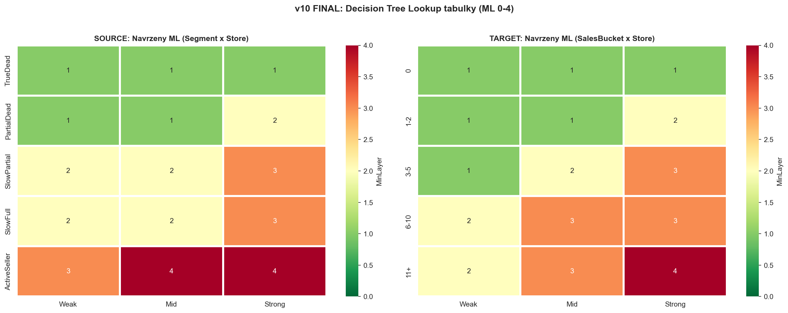

v10 — Decision Tree META
CalculationId: 233 | Generovano: 2026-03-25 19:23
Finalni decision tree konsolidovany z v2-v9. Stabilizovany od v8, potvrzeny v9.

1. SOURCE Decision Tree
1.1 Evoluce Source Lookup (velocity system v6+)
| Segment / Store | v6 | v7 | v8-v9 (FINAL) |
|---|
| TrueDead / Weak | 1 | 1 | 1 |
| TrueDead / Mid | 1 | 1 | 1 |
| TrueDead / Strong | 1 | 1 | 1 |
| PartialDead / Weak | 1 | 1 | 1 |
| PartialDead / Mid | 1 | 1 | 1 |
| PartialDead / Strong | 2 | 2 | 2 |
| SlowPartial / Weak | 2 | 2 | 2 |
| SlowPartial / Mid | 2 | 2 | 2 |
| SlowPartial / Strong | 3 | 3 | 3 |
| SlowFull / Weak | 1 | 1 | 2 |
| SlowFull / Mid | 2 | 2 | 2 |
| SlowFull / Strong | 2 | 2 | 3 |
| ActiveSeller / Weak | 3 | 3 | 3 |
| ActiveSeller / Mid | 4 | 4 | 4 |
| ActiveSeller / Strong | 4 | 4 | 4 |
Zmeny v8: SlowFull+Weak 1→2, SlowFull+Strong 2→3. Duvod: sold_after 56-75%, CalendarWeight odhalil
ze cast "ActiveSeller" byly SlowFull. v9 potvrdil nezavisle.
1.2 Finalni Source Lookup
| Segment | Weak | Mid | Strong | Smer |
|---|
| TrueDead | 1 | 1 | 1 | DOWN — bezpecne odvazet |
| PartialDead | 1 | 1 | 2 | OK — opatrnost u Strong |
| SlowPartial | 2 | 2 | 3 | OK — rozjizdi se |
| SlowFull | 2 | 2 | 3 | OK/UP — vyssi ochrana od v8 |
| ActiveSeller | 3 | 4 | 4 | UP — chranit! |
1.3 Source modifikatory
| Modifier | Podminka | Uprava | Potvrzeno |
|---|
| LastSaleGap | ≤90 dni | +1 ML | v7-v9 (SA 85-90%) |
| BrandFit source | TrueDead/SlowFull/SlowPartial + BrandStrong | +1 ML | v8-v9 (delta 5-11pp) |
| BrandFit source | ActiveSeller | ignorovat | SA >92% |
| Delisting | D/L | ML = 0 | v2-v9 |
1.4 Clamp
Final_ML = CLAMP(Base_ML + SUM(modifiers), 0, 4)
IF IsOrderable (A-O=9, Z-O=11): Final_ML = MAX(Final_ML, 1)
IF IsDelisted (D=3, L=4): Final_ML = 0
2. TARGET Decision Tree
2.1 Evoluce Target Lookup (v6+)
| Bucket / Store | v6 | v7 | v8-v9 (FINAL) |
|---|
| 0 / Weak | 1 | 1 | 1 |
| 0 / Mid | 1 | 1 | 1 |
| 0 / Strong | 2 | 1 | 1 |
| 1-2 / Weak | 1 | 1 | 1 |
| 1-2 / Mid | 2 | 1 | 1 |
| 1-2 / Strong | 2 | 2 | 2 |
| 3-5 / Weak | 2 | 1 | 1 |
| 3-5 / Mid | 2 | 2 | 2 |
| 3-5 / Strong | 2 | 3 | 3 |
| 6-10 / Weak | 2 | 2 | 2 |
| 6-10 / Mid | 2 | 3 | 3 |
| 6-10 / Strong | 2 | 3 | 3 |
| 11+ / Weak | 3 | 2 | 2 |
| 11+ / Mid | 3 | 3 | 3 |
| 11+ / Strong | 3 | 4 | 4 |
Bidirectional pivot (v7): Snizeni slabych targetu (0/Strong 2→1, 1-2/Mid 2→1, 3-5/Weak 2→1).
Zvyseni silnych (3-5/Strong 2→3, 6-10/Mid+Strong 2→3, 11+/Strong 3→4).
2.2 Finalni Target Lookup
| Bucket | Weak | Mid | Strong | Smer |
|---|
| 0 | 1 | 1 | 1 | REDUCE (NS 61-73%) |
| 1-2 | 1 | 1 | 2 | REDUCE (NS 58-65%) |
| 3-5 | 1 | 2 | 3 | OK — zlom (ST 42-46%) |
| 6-10 | 2 | 3 | 3 | GROWTH (ST 59-63%) |
| 11+ | 2 | 3 | 4 | GROWTH (ST 73-77%) |
2.3 Target modifikatory
| Modifier | Podminka | Uprava | Potvrzeno |
|---|
| AllSold / ST1 high | AllSold4M=1 OR ST1_4M ≥85% | +1 | v4-v9 |
| Growth pocket | Strong, Sales 3-10, ST ≥45% | +1 | v7-v9 |
| NothingSold / low ST | NothingSold4M=1 OR ST4M <20% | -1 | v5, v8-v9 |
| BrandFit (0-2 sales) BW | BrandWeak | -1 | v8-v9 |
| BrandFit (0-2 sales) BS | BrandStrong | +1 | v8-v9 |
| BrandFit (3-5) BW | BrandWeak | -1 | v8-v9 |
| BrandFit (6+) | — | ignorovat | delta <4pp |
| Delisting | D/L | ML = 0 | v2-v9 |
2.4 Clamp
Final_ML = CLAMP(Base_ML + SUM(modifiers), 0, 4)
IF IsOrderable (A-O=9, Z-O=11): Final_ML = MAX(Final_ML, 1)
IF IsDelisted (D=3, L=4): Final_ML = 0
3. Kompletni pseudokod
3.1 Source
-- Velocity classification (s CalendarWeight)
CalendarWeight = 0.7 IF half-year contains Nov+Dec ELSE 1.0
Velocity_12M = (Adjusted_Sales_12M / DaysInStock_12M) × 30
IF Sales_12M = 0 AND DaysInStock >= 270: TrueDead
IF Sales_12M = 0 AND DaysInStock 90-270: PartialDead
IF Sales_12M = 0 AND DaysInStock < 90: BriefNoSale
IF Velocity >= 0.5: ActiveSeller
IF Velocity < 0.5 AND DaysInStock >= 270: SlowFull
IF Velocity < 0.5 AND DaysInStock < 270: SlowPartial
base_ml = SOURCE_LOOKUP[segment][store]
IF LastSaleGapDays <= 90: base_ml += 1
IF segment IN (TrueDead,SlowFull,SlowPartial) AND BS: base_ml += 1
final_ml = CLAMP(base_ml, 0, 4)
IF IsOrderable: final_ml = MAX(final_ml, 1)
IF IsDelisted: final_ml = 0
3.2 Target
bucket = CASE WHEN sales=0 THEN '0' WHEN <=2 '1-2' WHEN <=5 '3-5' WHEN <=10 '6-10' ELSE '11+' END
base_ml = TARGET_LOOKUP[bucket][store]
IF AllSold4M=1 OR ST1_4M >= 85%: base_ml += 1
IF Strong AND sales 3-10 AND ST_4M >= 45%: base_ml += 1
IF NothingSold4M=1 OR ST_4M < 20%: base_ml -= 1
IF sales <= 2 AND BrandWeak: base_ml -= 1
IF sales <= 2 AND BrandStrong: base_ml += 1
IF sales 3-5 AND BrandWeak: base_ml -= 1
final_ml = CLAMP(base_ml, 0, 4)
IF IsOrderable: final_ml = MAX(final_ml, 1)
IF IsDelisted: final_ml = 0
4. Souhrn — smery zasahu
| Segment | Smer | Prinos |
|---|
| TrueDead (vsechny) | DOWN (ML=1) | SA 33-41% |
| PartialDead (W/M) | OK (ML=1) | Opatrnost |
| PartialDead (S) | UP (ML=2) | SA 62% |
| SlowFull (W/M) | UP (ML=2) | SA 56-64% |
| SlowFull (S) | UP (ML=3) | SA 75% |
| SlowPartial | UP (ML=2-3) | SA 72-84% |
| ActiveSeller | UP (ML=3-4) | SA 91-97% |
| Bucket × Store | Smer | Prinos |
|---|
| 0 / vsechny | REDUCE (ML=1) | NS 61-73% |
| 1-2 / W,M | REDUCE (ML=1) | NS 62-65% |
| 1-2 / S | OK (ML=2) | ST 56% |
| 3-5 / W | REDUCE (ML=1) | NS 45% |
| 3-5 / M | OK (ML=2) | ST 66% |
| 3-5 / S | GROWTH (ML=3) | ST 72% |
| 6-10 / M,S | GROWTH (ML=3) | ST 84-86% |
| 11+ / S | GROWTH (ML=4) | ST 94% |
v10 Decision Tree | 2026-03-25 19:23 | CalculationId=233